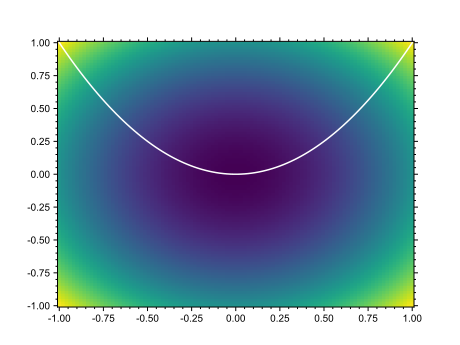

Tips And Tricks for Matplotlib¶
This page is not really a part of the documentation of the package, but rather some tips and tricks I have gathered over time.
Partially rasterizing your PDF output¶
You probably have tried outputting your meshplot in matplotlib and wondered why the heck it is taking soo long! The explanation is simple. Every coordinate and data combination is creating a box (with coordinattes) with a color that has to be output and written to the PDF file. When your figure includes multiple meshplots with 1000x1000 plots, the number of boxes becomes very large and the number of colors/coordinates even larger. One way to get around it, is simply saving it as png file. That however doesn’t make your plots exactly publishable.
A workaround is partially rasterizing your plots. That can be done with the following command:
import os
import matplotlib.pyplot as plt
import numpy as np
# Internal
import lwsspy.plot as lplt
import lwsspy.math as lmat
import lwsspy.base as lbase
lplt.updaterc()
# Create data
x = np.linspace(-1, 1, 100)
y = np.linspace(-1, 1, 100)
xx, yy = np.meshgrid(x, y)
# Plot figure
plt.figure()
ax = plt.gca()
ax.set_rasterization_zorder(-10) # Important line!
plt.plot(x, y**2, 'w') # Zorder default is 0
plt.pcolormesh(xx, yy, xx ** 2 + yy ** 2, edgecolor=None, zorder=-15,
shading='auto')
# Save figure with rasterization with 300dpi
plt.savefig(os.path.join(lbase.DOCFIGURES, "test_rasterize.svg"), dpi=300)
plt.show()
It works for both .svg and .pdf. Probably others too, but I haven’t tried.
Below the image produced by the code above
Make x/y labels invisible on shared axes plots¶
To make plots with subfigures more beautiful, you may want to remove axes labels if the plots share the axes!
import os
import matplotlib.pyplot as plt
import numpy as np
# Internal
import lwsspy.plot as lplt
import lwsspy.base as lbase
lplt.updaterc()
# Create vector
x = np.linspace(-1, 1, 100)
for _i in range(4):
# Create subplots
if _i == 0:
ax = plt.subplot(221+_i)
else:
ax = plt.subplot(221+_i, sharex=ax, sharey=ax)
# Plot line
plt.plot(x, x ** (_i+1), label=f"$y = x^{_i + 1}$")
ax.grid(True)
ax.autoscale(enable=True, axis='both', tight=True)
# Fix labels
if _i in [0, 2]:
plt.ylabel("y")
if _i in [0, 1]:
ax.tick_params(labelbottom=False) # The important line
if _i in [2, 3]:
plt.xlabel("x")
if _i in [1, 3]:
ax.tick_params(labelleft=False) # The important line
# Generate legend
plt.legend(loc=4)
# Adjusting the plots
plt.subplots_adjust(hspace=0.125, wspace=0.125)
# Saving
plt.savefig(os.path.join(lbase.DOCFIGURES, 'remove_labels.svg'))
# And showing for good measure
plt.show()

Make the figure background transparent when exporting¶
matplotlib.pyplot.savefig has a keyword transparent which makes the
background of figures when exported to formats, such as png or svg,
transparent. Simply save your figure using
import matplotlib.pyplot as plt
# your figure code goes here
plt.savefig(<output_filename>, transparent=True)
For a converse example, see Partially rasterizing your PDF output.
Multiple Locator for the Axes¶
Sometimes it is convenient to show things as multiples of a certain values.
A good example are radians, often times cyclical motions are easier
illustrated as multiples of pi instead of it’s value in radians.
Using functions from lwsspy this can be done two ways, where the second
one is arguably more elegant.
# External
import os
import numpy as np
import matplotlib.pyplot as plt
# Internal
import lwsspy.plot as lplt
import lwsspy.base as lbase
plt.figure(figsize=(8, 4))
plt.subplots_adjust(bottom=0.1, top=0.9, left=0.05, right=0.95, hspace=0.1)
ax = plt.subplot(211)
x = np.linspace(-np.pi, 3*np.pi, 500)
plt.plot(x, np.cos(x))
plt.title(r'Multiples of $\pi$ - 2 ways')
ax.grid(True)
ax.set_aspect(1.0)
ax.axhline(0, color='black', lw=2)
ax.axvline(0, color='black', lw=2)
# Define Locators/formatters more or less by hand
ax.xaxis.set_major_locator(plt.MultipleLocator(np.pi / 2))
ax.xaxis.set_minor_locator(plt.MultipleLocator(np.pi / 12))
ax.xaxis.set_major_formatter(plt.FuncFormatter(
lplt.multiple_formatter(2, number=np.pi, latex='\pi')))
ax = plt.subplot(212)
# Create Multiple class containing locators, and formatters
minor = lplt.Multiple(12, number=np.pi, latex='\pi')
major = lplt.Multiple(2, number=np.pi, latex='\pi')
# Plot
x = np.linspace(-np.pi, 3*np.pi, 500)
plt.plot(x, np.cos(x))
ax.grid(True)
ax.set_aspect(1.0)
ax.axhline(0, color='black', lw=2)
ax.axvline(0, color='black', lw=2)
ax.xaxis.set_major_locator(major.locator)
ax.xaxis.set_minor_locator(minor.locator)
ax.xaxis.set_major_formatter(major.formatter)
plt.savefig(os.path.join(lbase.DOCFIGURES,
"multiple_locator.svg"), transparent=True)
plt.show()
Plotting a Line with Variable Color and Width¶
Below shown the usage of a convenience function included in lwsspy which
makes it easy to plot lines with variable color and width. It takes
in x, y, and z and parses all other *args and **kwargs to
a LineCollection and returns the LineCollection as well as a
ScalarMappable to enable simple colorbar creation.
import os
import matplotlib.pyplot as plt
from matplotlib.colors import Normalize
import numpy as np
# Internal
import lwsspy.plot as lplt
import lwsspy.base as lbase
lplt.updaterc()
# Create data
x = np.linspace(0, 5*np.pi, 10000)
y = np.cos(x)
z = -np.sin(x)
# Create Norm
norm = Normalize(vmin=-1, vmax=1)
# Plot figure
plt.figure(figsize=(8, 3))
plt.subplots_adjust(bottom=0.15, top=0.9, left=0.05, right=0.95)
ax = plt.gca()
# Main function
lines, sm = lplt.plot_xyz_line(
x, y, z,
linewidths=(np.abs(z)+1)**2.0,
cmap='seismic', norm=norm)
cbar = plt.colorbar(sm, aspect=40, fraction=0.05, pad=0.025)
cbar.set_label(r'$\frac{\mathrm{d}y}{\mathrm{d}x}$', rotation=0, labelpad=10)
plt.title("Plotting a Line with Adjustable Color and Width")
# For making the figure nicer
minor = lplt.Multiple(12, number=np.pi, latex='\pi')
major = lplt.Multiple(2, number=np.pi, latex='\pi')
ax.xaxis.set_major_locator(major.locator)
ax.xaxis.set_minor_locator(minor.locator)
ax.xaxis.set_major_formatter(major.formatter)
plt.savefig(os.path.join(lbase.DOCFIGURES,
"xyz_line.svg"), transparent=True)
plt.show()
An example using the lwsspy.plot_xyz_line of ancient reef topography
in Nevada.
rotational view.